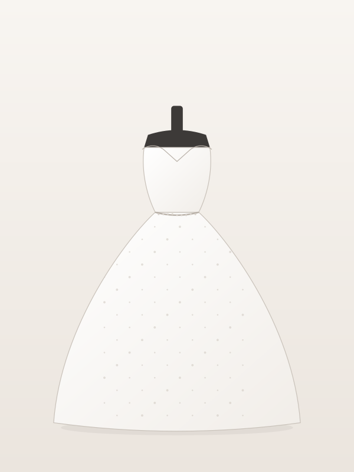
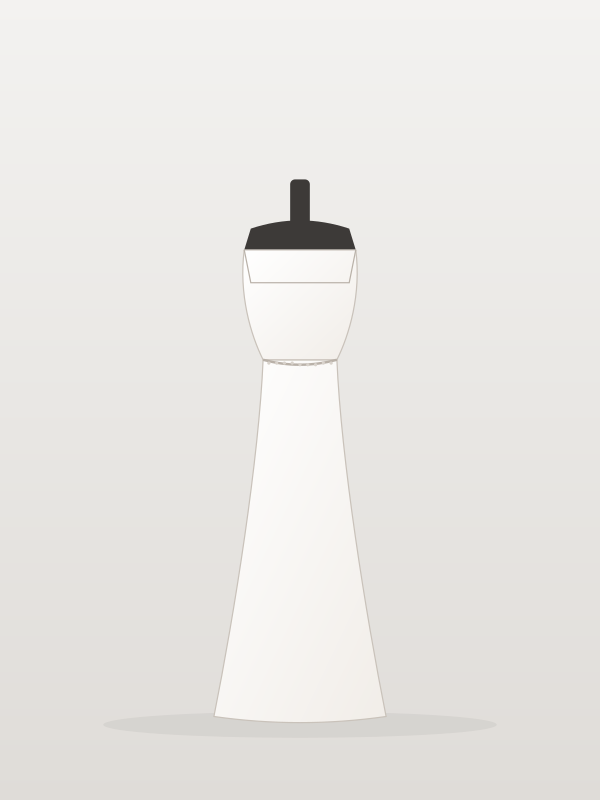
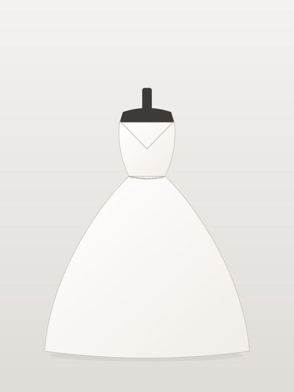

Idealne dopasowanie
Suknia jest konstruowana od zera według Twoich wymiarów. Nie trzeba jej „przerabiać” – od początku powstaje dla Twojej sylwetki.
Autorska pracownia krawiecka · woj. lubelskie
Pokaż nam, o czym marzysz, a my to dla Ciebie uszyjemy.

Każda suknia
powstaje od nowa,
tylko dla Ciebie

O nas
Coccinelle to profesjonalna, autorska pracownia krawiecka. Nie sprzedajemy sukni z wieszaka – każdą projektujemy i szyjemy od podstaw, na wymiar konkretnej Panny Młodej.
Słuchamy, doradzamy w wyborze tkanin i fasonu, a potem krok po kroku, przymiarka po przymiarce, dopracowujemy każdy detal: koronkę, dekolt, długość trenu. Tak, by w dniu ślubu suknia leżała idealnie i była dokładnie taka, jak w Twoich marzeniach.
Dlaczego suknia szyta na miarę?
Suknia jest konstruowana od zera według Twoich wymiarów. Nie trzeba jej „przerabiać” – od początku powstaje dla Twojej sylwetki.
Możesz połączyć ulubiony dekolt z wymarzonym dołem, wybrać koronkę, rękawy i tren. Projekt powstaje razem z Tobą.
Nikt inny nie będzie miał takiej samej sukni. To projekt autorski, uszyty tylko dla Ciebie, na ten jeden wyjątkowy dzień.
Nasze suknie
Kilka sukni, które powstały w naszej pracowni. Każda z nich była najpierw czyimś marzeniem.







Więcej realizacji na Instagramie @coccinellesuknieslubne
Tkaniny & detale
Razem wybieramy materiały, które najlepiej oddadzą charakter Twojej sukni – od zwiewnych tiuli po szlachetną satynę.
Romantyczna i kobieca – na gorset, rękawy, plecy lub całą suknię.
Lekkie, warstwowe spódnice i delikatne welony.
Elegancki połysk i piękna struktura dla klasycznych fasonów.
Minimalistyczne, gładkie kroje, które podkreślają sylwetkę.
Perełki, kryształki, aplikacje – dodawane z wyczuciem.
Making of
Od pierwszej rozmowy do dnia ślubu jesteśmy z Tobą na każdym etapie.
Opowiadasz nam o swoich marzeniach, pokazujesz inspiracje. Rozmawiamy o stylu, tkaninach i terminie.
Przygotowujemy propozycję fasonu i dobieramy materiały: koronki, tiule, satyny, zdobienia.
Dokładnie zdejmujemy miarę, aby suknia była skrojona idealnie pod Twoją sylwetkę.
Na kolejnych przymiarkach dopracowujemy każdy detal, aż wszystko będzie dokładnie takie, jak chcesz.
Odbierasz suknię gotową na najpiękniejszy dzień – uszytą tylko dla Ciebie.
„Pokaż nam, o czym marzysz,
a my to dla Ciebie uszyjemy.”
Pytania
Szycie sukni na miarę wymaga kilku przymiarek, dlatego najlepiej odezwać się jak najwcześniej. Dokładny czas realizacji ustalamy indywidualnie podczas pierwszej konsultacji.
Cena zależy od fasonu, wybranych tkanin i zdobień. Wypełnij formularz wyceny – przygotujemy dla Ciebie indywidualną propozycję.
Oczywiście! Wystarczy kilka inspiracji – zdjęcia, zapisane posty, ulubione detale. Podczas konsultacji pomożemy dobrać fason do Twojej sylwetki i stylu ślubu.
Tak, na tym polega szycie na miarę. Dekolt z jednej sukni, rękawy z drugiej, dół z trzeciej – zaprojektujemy suknię, która połączy wszystko w spójną całość.
Liczba przymiarek zależy od projektu. Spotykamy się tyle razy, ile potrzeba, aby suknia leżała idealnie.
Wycena
Każda suknia jest inna, dlatego wycenę przygotowujemy indywidualnie. Napisz kilka słów o swoich planach, a odezwiemy się z propozycją terminu konsultacji.
Nowe suknie, kulisy szycia i relacje „making of” – na bieżąco na Instagramie.
Kontakt
[Adres pracowni – do uzupełnienia]
województwo lubelskie
Wizyty po wcześniejszym umówieniu
[+48 telefon – do uzupełnienia]
[e-mail – do uzupełnienia]